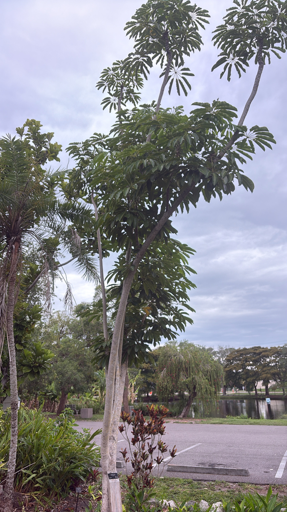

- One of Florida's problem invaders: birds eat the red berries and drop the seeds in wild hammocks, where a seedling can take root high in a native tree and slowly strangle it.
- In summer, the canopy erupts with dramatic, three-foot-wide clusters of deep red flower spikes.
- Originally from Queensland and New Guinea, it was a wildly popular ornamental before its invasive potential was understood — the park keeps one as a teaching specimen for exactly that reason.
- Palma Sola once had two of these about twenty yards apart; the 2024 saltwater floods claimed one, and the survivor is steadily fighting its way back to life.
Native to tropical rainforests of Australia, New Guinea, and Java. Introduced to Florida as a landscape and houseplant — once extremely popular, now recognized as a serious invasive problem.
- The Umbrella Tree's story is a cautionary tale in Florida horticulture. For years it was a staple landscape plant — easy, fast, dramatic, widely sold. In fact, it remains one of the most common houseplants in North America — perfectly well-behaved in a pot up north, yet an aggressive invader in frost-free South Florida. Then ecologists began finding it in hammocks where no one had planted it.
- The mechanism was birds: the red berries are eagerly eaten and the seeds deposited intact in natural areas, sometimes miles away. Young Scheffleras start as epiphytes — germinating in the crotch of a native tree, sending roots down the bark — before eventually overtopping and strangling the host.
- By the time the problem was recognized, it was already established across South Florida's most sensitive hammock habitats. It is now a FISC Category I invasive, the highest designation, and IFAS classifies it as invasive in both Central and South Florida.
- Large established individuals (over 10 inches trunk diameter) are particularly difficult to eradicate — the recommended treatment is cut-stump application of Triclopyr, which can take up to 9 months to kill a large tree. The park's specimen is maintained as an educational display.
- Note: the current accepted scientific name is *Heptapleurum actinophyllum* — the genus was reclassified from Schefflera based on molecular (DNA) analysis showing it is distinct from the true Scheffleras. Most literature and signage still uses Schefflera actinophylla.
The Umbrella Tree's red berries are actively consumed by birds — which is precisely what makes it invasive. Mockingbirds, robins, and many other fruit-eating species disperse its seeds widely. The large compound leaves create heavy shade that reduces ground-level plant diversity beneath it.
While it provides fruiting resources and canopy cover, its ecological value in Florida is entirely outweighed by the habitat displacement it causes in natural areas. We maintain our specimen strictly as a live educational tool to demonstrate how quickly bird-dispersed exotic plants can escape cultivation.
Can begin life as an epiphyte, germinating in the crotch of a native tree and sending roots down to ground level before eventually overtopping the host.
Small, dark red, borne on radial clusters of stems up to three feet across. Produced in summer on trees growing in full sun.
Prolific, small, round berries maturing from dark red to purple. Highly attractive to birds — the primary dispersal vector.
Large, palmately compound with 7 to 16 glossy oval leaflets arranged in a circular pattern. Each leaflet up to 12 inches long.
The circular arrangement of leaflets on long petioles creates the 'umbrella' silhouette the name describes — look up into the crown from below for the full effect. The radial flower stalks in summer are unmistakable: multiple long stems fanning out from a single point, each studded with small red blooms.
Do not eat any part of this plant.
It contains insoluble calcium oxalate crystals that cause immediate, intense burning of the mouth and throat, drooling, vomiting, and difficulty swallowing if chewed.
The sap can also cause contact dermatitis in sensitive people.
It's toxic to dogs and cats in the same way. Keep pets from chewing the leaves, and contact your vet if ingestion is suspected.
In its years at Palma Sola — in the park's particular microclimate — this species has shown no sign of the invasive behavior it's known for elsewhere. We keep a close watch for volunteer seedlings all the same, and never propagate or plant it elsewhere on the property.

- © Randall Carter (CC-BY-NC), via iNaturalist